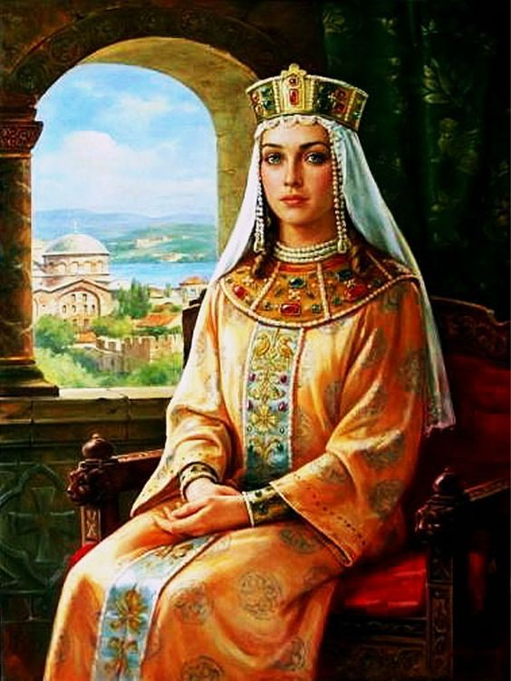
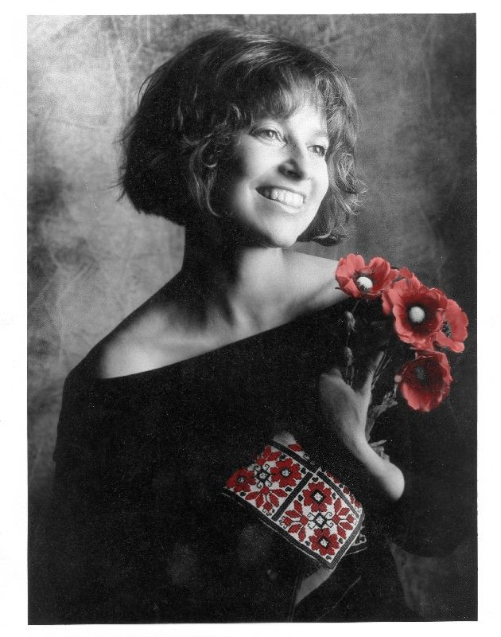

Видатні жінки України

Княгиня Ольга
Відомо, що в 912 році вона вийшла заміж за князя Ігоря коли їй було 10 років. Будучи хоробрим воїном, одного разу Ігор вирушив збирати власноруч данину до древлян. Ті оточили його та вбили. Розлючена Ольга вигадала витончену помсту – у 946 році вона зажадала щоб кожна древлянська родина в якості данини віддала їй голубів. Княгиня прив’язала до їх лапок тліючі соломинки і відпустила їх додому. Так було спалено ціле селище.
Але Ольга прославилась не тільки цим. Вона була ще й мудрою правителькою, заснувала декілька міст, покращувала благоустрій своєї землі, будувала стіни для укріплення навколо селищ та ввела фіксовані податки. Вона була першою жінкою-княгинею в Київській Русі, яка прийняла християнство. На жаль, її син Святослав ще не був готовий до нової віри та залишився язичником. У 969 році княгиня перебувала у Києві і тяжко хворіла. В тому ж році вона й померла. У XVI Ольгу причислили до лику святих.
Джерело
Леся Українка
Народилася 25 лютого 1871 в місті Новограді-Волинському.
6 січня 1880р. дуже застудилася, початок тяжкої хвороби.
Влітку 1883 року діагностували туберкульоз кісток, у жовтні цього ж року видалили кістки, уражені туберкульозом.
Починаючи з 1884 року Леся активнопише вірші (“Конвалія”, “Сафо”, “Літо краснеє минуло” і ін.) і публікує їх у часописі “Зоря”. Саме цього року з’явився псевдонім “Леся Українка”.
Про рівень її освіти може свідчити факт, що у 19-літньому віці написала для своїх сестер підручник “Стародавня історія східних народів”.
Вимушені потребою лікування подорожі до Німеччини, Італії, Єгипту, кількаразові перебування на Кавказі, Одещині, в Криму збагатили її враження та сприяли розширенню кругозору письменниці.
Останні роки життя Л. Косач-Квітки пройшли в подорожах на лікування до Єгипту й на Кавказ.
Померла 19 липня 1913 року в Сурамі у віці 42 років.
Джерело
Соломія Крушельницька
видатна українська оперна співачка.
Музика ввійшла в життя Соломії з раннього дитинства, з колискових пісень матері. Ще маленькою дівчинкою вчилася грати на фортепіані, а з 10 років виступала в хорі організованому її батьком. У 1893 році Крушельницька з медаллю закінчила консерваторію й з успіхом дебютувала на сцені Львівської опери. Через рік молода вокалістка вже співала провідні партії в оперних театрах Італії, де швидко завоювала любов і вдячність публіки. Звістка про це дійшла до рідного Львова, і незабаром керівництво міської опери запросило Крушельницьку на гастролі. Слава Крушельницької рознеслася по всіх країнах Європи й докотилася до Росії. Крушельницька завжди включала в свої програми українські народні пісні, які безмірно любила, а також твори українських композиторів: Лисенка, Людкевича, Нижанковського, Вахнянина, Січинського. Останні роки Соломія жила й працювала на рідній землі, передаючи свій багатий досвід й величезні знання молоді.
Джерело
РОКСОЛАНА
Легендарна Роксолана є однією з найвідоміших і водночас найзагадковіших жінок в українській історії часів пізнього Середньовіччя. Анастасія Гаврилівна Лісовська - донька священика із західноукраїнського містечка Рогатин. У 1522 році, як свідчить переказ, в день власного весілля юна Анастасія була викрадена татарами і потрапила на невільничий ринок у Кафі, а потім до Стамбулу. Там візир султана Сулеймана I придбав її для свого пана. Султанші дозволялося багато, вона навіть з'являлася на людях з відкритим обличчям, що анітрохи не шкодило її репутації зразкової мусульманки. У подружжя народилося троє синів і дочка. Сорок років була Роксолана дружиною Сулеймана Пишного. Вона померла своєю смертю, залишивши чоловіка вдівцем. Їй вже не вдалося побачити, як її син зійшов на трон, ставши султаном Селімом II. Безсумнівно, Роксолані допомогли краса, підступність, жорстокість і неабиякий розум. Вона особисто вела переписку з правителями сусідніх держав (Польщі, Венеції, Персії), знала Коран досконало, опікувалася мистецтвом.
Джерело

Квітка Цісик
Її голос хоч раз почули понад 20 мільярдів людей, що в три рази більше за все населення планети. Ім'я цієї співачки Квітка Цісик.
Під час війни в 1944 році молоді батьки Квітослави (скорочено Квітка) виїхали зі Львова і довгий час переховувалися від німців і від радянської влади. І, нарешті, в сорок дев'ятому році, завдяки фінансовій допомозі друзів і родичів, потрапили в США.
Після смерті батька Квітка шукала заробіток, як могла: пропонувала записи різноманітним компаніям, співала у нью-йоркських клубах. Так її помітили продюсери. Відтоді в Америці Цісик стала однією з найвідоміших і найдорожчих виконавиць джинглів до рекламних роликів. Її голос звучав у рекламних компаніях Coca-Cola, American Airlines, McDonald's. Протягом 16 років вона була офіційним голосом "Форд Моторз". Багато американців і досі пам'ятають музичний джингл "Have you driven a Ford lately" у виконанні Кейсі Цісик. За це "Форд" дарував їй автомобілі. Ця ж компанія підрахувала, що голос Цісик прослухали понад 22 мільярди разів, тобто у кілька разів більше, ніж населення Землі.
Джерело
Марко Вовчок
Справжнє ім’я - Марія Вілінська
Народилася 10 грудня 1833 р. в маєтку Єкатерининське Орловської губернії у збіднілій дворянській сім’ї.
Проживаючи в 1851 — 1858 рр. у Чернігові, Києві, Немирові на Вінниччині вивчила життя, культуру, мову українського народу.
Пізніше у Петербурзі у 1859 вона вже як автор збірки «Народні оповідання» потрапляє в коло видатних літераторів. У 1859 — 1867 рр. перебуває за кордоном, де знайомиться з видатними людьми.
Після повернення з-за кордону зближується з видавцями «Отечественных записок», веде в цьому журналі рубрику зарубіжної літератури, публікує свої оригінальні твори й переклади.
У 1867 — 1878 рр. найяскравіше виявився талант письменниці як російського романіста.
Виступає Марко Вовчок і як критик, редактор петербурзького журналу „Переводы лучших иностранных писателей“.
24 травня 1870-го року Марко Вовчок підписала контракт з петербурзьким видавцем Звонарьовим про укладання нею та редагування ілюстрованого місячника „Переводы лучших иностранных писателей“.
Джерело